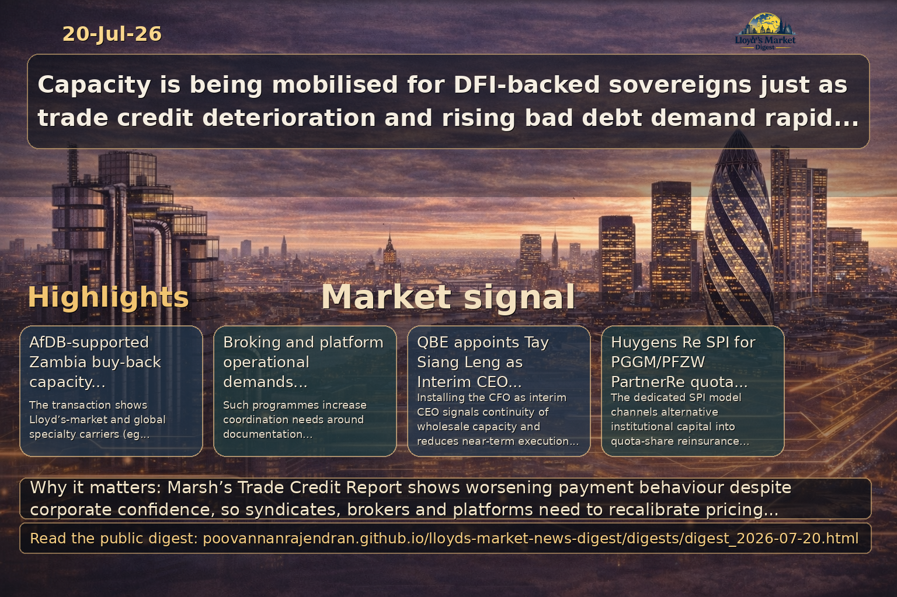

Executive summary
Marsh's Trade Credit Report 2026 highlights a disconnect between UK corporate confidence and on-the-ground deterioration in payment behaviour and bad debt. For Lloyd's market participants, global specialty brokers, syndicates and placement platforms this signals near-term opportunities for premium growth but also elevated portfolio risk, concentration and claims volatility. Immediate priorities are recalibrating pricing and appetite, enhancing broker-led advisory and placement workflows, and…
View LinkedIn Visual Summary

Generated from the same day's LinkedIn digest text.
Key themes
- Trade credit risk normalisation and rising bad debt
- Pricing, capacity and limit recalibration across specialty portfolios
- Broker advisory role and placement platform digitisation
- Syndicate stress-testing, aggregation and reinsurance strategy
- Product innovation: trade credit extensions and working-capital solutions
- Specialty capacity mobilization for sovereign and DFI-backed transactions
Source: reinsurancene.ws
Why it matters: The AfDB-supported Zambia buy-back demonstrates the ability of the global credit insurance and specialty market — including Lloyd's participants and managing agents — to assemble significant cross-jurisdictional capacity for development finance transactions, setting a template for future sovereign and DFI-linked placements.
- Capacity and counterparty composition: Participation by managing agents and specialty carriers (eg. Atrium Underwriters, Canopius, Chaucer, MS Amlin, Liberty Specialty Markets, Brit) evidences Lloyd's-market and global specialty willingness to underwrite large sovereign-related credit exposures, creating an expanded pool of capacity for similar DFI-backed deals.
- Broker and placement implications: Such multi-carrier transactions increase demands on broking teams and electronic/hybrid placement platforms to coordinate documentation, allocation, lead insurer roles, and cross-border regulatory and tax considerations — necessitating standardized workflows and strong program-management capability.
- Market precedent and product innovation: The debt-for-energy structure, combined with explicit DFI involvement and re/insurance wrap, creates a repeatable model for ESG-linked sovereign solutions; carriers must calibrate pricing, reputational risk appetite, collateral and claims governance for future replication.
Source: reinsurancene.ws
Why it matters: QBE's interim appointment reflects a strategic emphasis on wholesale cluster continuity in Asia and has immediate consequences for broker relationships, regional placement activity and the competitive landscape as experienced leaders move between carriers.
- Distribution and placement continuity: Installing the CFO as interim CEO signals operational continuity for brokers that depend on QBE's wholesale capacity in Asia, reducing near-term execution risk for ongoing placements and treaty relationships while strategic leadership is confirmed.
- Strategic focus on wholesale integration: The move underscores QBE's commitment to its wholesale cluster model in Asia; brokers should expect sustained product development and potential reallocation of capacity or appetite as the interim leadership aligns finance and underwriting priorities.
- Talent migration and competitive dynamics: Ronak Shah's departure to MSIG Asia highlights active executive mobility among regional wholesale leaders — a factor that can accelerate product shifts, alter broker-carrier relationships and prompt competitors to re-evaluate distribution and market-share strategies.
Source: artemis.bm
Why it matters: The dedicated Huygens Re SPI for PGGM/PFZW’s PartnerRe quota share highlights a repeatable model where institutional investors access reinsurance economics via bespoke SPIs, reducing friction between ILS capital and traditional reinsurers. This has direct consequences for capacity sourcing, call on global specialty brokers to structure and distribute hybrid solutions, and for Lloyd’s syndicates that must assess displacement or complementary effects on their lines of business.
- Market impact: Increases alternative capital supply into quota-share reinsurance, potentially exerting downward pressure on pricing and altering capacity allocation between reinsurers, syndicates and ILS vehicles.
- Broker and syndicate considerations: Brokers must develop capabilities to structure SPI-backed quota shares and advise on governance, collateral and retrocession; syndicates should evaluate partnership, co-investment or distribution strategies to maintain market share.
- Placement platforms and operations: Platforms must support bespoke SPI documentation, streamlined diligence for institutional investors, and settlement/escrow workflows; compliance teams should review jurisdictional, tax and regulatory implications when SPIs sit outside Lloyd’s domicile.